Apply complete social accounting and governance principles to bounded policy cases
Useful first: Identify economic externalities and apply conditional welfare criteria, Allocate a fixed abatement target and compare instrument boundaries
Lesson outline
- 02IntroductionSee the main question, learning objectives and prerequisites.
- 03Key definitions and conceptsGet familiar with the important terms and notation.
- 04US Environmental Policy and Economic PrinciplesSource:
- 05Worked exampleFollow a complete application of the reasoning.
- 06Practise the reasoningWork through written tasks, with optional support and solutions.
- 07Check your reasoning: an offline quizCheck your choices and see feedback without a connection.
- 08Check your understandingReview the key distinctions and check what you can explain.
- 09Test yourself laterTry another prepared question before rereading.
- 10SourcesFind the materials and limits behind the lesson.
Introduction
In this lesson, apply complete social accounting and governance principles to bounded policy cases.
2.1 What you’ll learn
- Apply the paper’s seven economic principles to a supplied policy counterfactual with explicit units, timing and evidence limits.
2.2 Before you begin
- Identify economic externalities and apply conditional welfare criteria
- Allocate a fixed abatement target and compare instrument boundaries
Check the foundations
Does positive aggregate net benefit imply every subgroup gains?
Reveal foundation explanation
No; distribution must be reported and potential compensation is not proof of actual payment. Otherwise
Does cheap compliance alone establish positive policy net benefit?
Reveal foundation explanation
No; compare the target’s social benefits and costs in a relevant counterfactual. Otherwise
Key definitions and concepts
- Complete social accounting: Counting relevant benefits and costs across people, time and market/nonmarket pathways.
- Present value: A dated future amount discounted to a declared comparison date.
- Economic standing: Which affected people and outcomes enter the appraisal.
US Environmental Policy and Economic Principles
Source:
Back to Week 2.
Kling, Polasky and Segerson ask whether the environmental-policy changes initiated during the early months of the second Trump administration promote economic efficiency. Their 2025 paper argues that many changes omit environmental benefits, ignore spillovers or weaken the information needed for effective decisions.
It is a conceptual policy critique using documented actions and cited studies. The authors declare that the paper uses no data and received no funding;
it does not estimate an original causal effect or a total monetary welfare loss. All policy descriptions below are what this paper reported in 2025, including proposals and unresolved actions.
They have not been updated into a claim about the present legal situation.
4.1 Topic map and argument

Source-grounded map of the question, economic criteria, policy applications, conclusion and method limitation. The paper's substantive argument occupies physical PDF pp. 1–20, printed pp. 2291–2310; references continue through p. 27.
The authors distinguish their economic critique from a party-political standard and acknowledge that earlier administrations have also failed to choose efficient instruments. Their benchmark is not whether a policy is labelled regulation or deregulation, but whether benefits exceed costs and a chosen objective is achieved with the least resource cost.
Simply removing a costly programme can lower welfare if its forgone benefits exceed its saved cost. Distributional goals remain additional legitimate considerations.
4.2 Seven principles for evaluating environmental policy
- Market failures: externalities and public goods—including research, information, infrastructure and environmental quality—give an efficiency rationale for intervention because unregulated markets generally underprovide beneficial public goods or overproduce harmful effects.
- All social benefits and costs: analysis should consider market and nonmarket effects, present and future people, intended and unintended consequences. A saving in compliance expenditure is only one component.
- Discounting: benefit-cost analysis normally compares discounted present values using estimates reflecting consumption time preference and the opportunity cost of capital.
- Uncertainty: an uncertain effect is not automatically nonexistent or best estimated as zero.
- Distribution: report how benefits and costs fall on different groups, alongside their aggregate totals.
- Scale of government: appropriate jurisdiction depends on spillovers, cost/benefit heterogeneity and information about local conditions.
- International cooperation: global public goods/bads require cooperation because a short-term self-interested free-riding equilibrium does not achieve efficient provision.
These are the authors' selected principles, rather than an exhaustive model of all policy choices. Principles 2–5 concern assessment, while 6–7 concern governance.
The paper's usage of social welfare generally means aggregate net benefit. A positive net-benefit change is a potential Pareto improvement: winners could compensate losers, although transfers may never occur.
This differs from a strict Pareto improvement with nobody worse off or a social welfare function giving special distributional weights. Cost effectiveness means producing a given output/service at minimum cost; it does not by itself determine whether that output level is socially worthwhile.
The externality and welfare note and instrument note develop these foundations.
4.3 Climate change: cooperation damage and uncertainty
The paper reports Executive Order 14162 directing withdrawal from the Paris agreement and related UNFCCC commitments in January 2025. The economic objection is the free-rider problem: a country bears its mitigation cost while much of the avoided harm accrues abroad, so independent choices underprovide global climate stability.
International agreements can make all participants better off. The authors discuss climate clubs with tariffs on imports from countries lacking effective carbon policy, linking this to the EU Carbon Border Adjustment Mechanism and a UK adoption reported by their cited sources.
These examples illustrate a mechanism for altering participation incentives; they are not a complete equilibrium proof or current implementation review.
The paper also reports reconsideration of the EPA's 2009 Endangerment Finding, a June 2025 proposal concerning fossil-power-plant greenhouse emissions, disbanding of the Interagency Working Group on Social Cost of Greenhouse Gases and May 2025 guidance sharply restricting monetized greenhouse-gas assessment. These steps differ in status—findings, executive direction, proposed rules and guidance are not interchangeable.
The authors argue that omitting climate damages effectively assigns them zero weight in the decision, contrary to complete social accounting and the uncertainty principle. This critique does not imply perfect knowledge of the damage function;
it rejects using uncertainty itself as evidence of no cost.
A social cost of carbon is a money-valued marginal damage measure allowing an extra emission unit to enter policy appraisal. The article cites EPA estimates for the social cost of carbon in 2020 of USD 120–340 per ton, depending on discount rate.
It reports expert review and public-comment scrutiny, rather than generating a new estimate or statistical interval. The difference across estimates reflects discounting choices;
the source gives no conversion to present dollars or a newly calculated rate. Restricting attention to domestic costs ignores cross-border losses and weakens incentives for global cooperation if other countries do the same.
The article's local-air-pollution footnote also notes that weakening climate policy can alter local air quality.
4.4 Energy production: price is incomplete without external costs
The paper discusses the “Unleashing American Energy” and “National Energy Emergency” orders, favouring fossil extraction and faster environmental review, alongside restrictions on wind leasing and permits. It argues that an efficiency comparison should include environmental/health effects across technologies, rather than reward one source while omitting its damages and constraining alternatives.
National security or job arguments are not complete substitutes for that accounting.
4.5 Check the units in the numerical example
The paper cites non-climate air-pollution damages of 3.2 cents/kWh for coal and 0.16 cents/kWh for natural gas. With an assumed carbon value of USD 100 per ton CO₂, it reports total climate-plus-air-pollution costs of 13.2 and 5.16 cents/kWh.
The source literally writes coal emissions as “1 ton of CO₂ per megawatt,” with gas at 0.5 tons. A megawatt is power, while its later per-kWh cost needs energy units;
the calculation is dimensionally consistent with 1 and 0.5 ton per megawatt-hour. This is an explicitly identified dimensional reconstruction, not a silent alteration of the source:
Adding 3.2 gives 13.2 cents/kWh; half the carbon intensity gives 5 plus 0.16, or 5.16 cents/kWh. The paper's reported zero for renewables concerns direct carbon/air-pollution emissions during electricity production. It explicitly acknowledges upstream effects from producing panels and turbines. Its zero should not be reinterpreted as zero lifecycle or total environmental cost.
The authors support their challenge to the emergency framing with cited historical data: US oil production of 13.2 million barrels/day in 2024, prices below record levels in 2025, utility-scale wind generation growth of 138% and solar growth of 894% during 2015–2024, and coal-production decline of 42.2% over that period. These are different quantities and denominators—electricity generation and coal production are not the same variable.
They are contextual evidence cited by the paper, not proof that every energy investment is inefficient. The efficiency prescription is to incorporate relevant social effects through price or quantity instruments.
4.6 Water: evaluate benefits and preserve uncertainty
The authors distinguish the Safe Drinking Water Act's public-water-supply role from the Clean Water Act's surface-water role. They explicitly acknowledge that the literature has not unequivocally established total benefits above costs for the entire CWA suite.
Whether low measured benefits reflect weak benefits or incomplete measurement remains unresolved. Reported public concern—56% greatly worried about drinking-water pollution and 52% about waterway pollution in the cited poll—is evidence of concern, not a monetized net-benefit calculation.
Their case studies should therefore be assessed individually.
4.7 Lead service lines
The article reports a late-2024 rule requiring replacement of remaining lead service lines within ten years and estimates of benefits more than ten times costs. It connects high returns partly to economies of scale from replacing neighbourhood-wide networks, rather than isolated household lines, and records USD 15 billion from the 2021 Infrastructure Investment and Jobs Act.
It then discusses a funding freeze and possible reconsideration. The authors acknowledge that the story was evolving and its final resolution unclear.
Their argument is conditional: undermining cost-effective scale investment is inefficient where the resulting benefits far exceed costs. It is not an independent audit of every site or a statement that the announced rule had already been repealed.
4.8 PFAS and cumulative exposure
For the 2024 drinking-water standards on six PFAS compounds, the paper cites compliance costs near USD 1.5 billion/year, quantifiable benefits near USD 1.59 billion/year and substantial unquantified health benefits. It reports reduced exposure for about 100 million people and prevention of thousands of illnesses/deaths as the agency's prospective assessment.
In May 2025, the paper reports reconsideration of four standards and a two-year compliance extension for PFOS/PFOA. A further discussed product-specific evidentiary approach would ignore harm from cumulative exposure across many products if each isolated amount could not be linked causally to risk.
The authors object that complete accounting must follow the combined physical exposure. These numbers and expected outcomes are cited assessments, not realized treatment-effect estimates from this paper.
4.9 Wetlands and the WOTUS boundary
The definition of waters of the United States determines the reach of federal protection. The paper describes the wider 2015 rule, the narrower 2019/2020 change, its court reversal and the still narrower 2023 Sackett interpretation.
It reports estimated loss of legal protection for nearly 700,000 stream miles, 35 million wetland acres and about 30% of water bodies near drinking-water sources. Loss of legal protection is not the same as immediate physical destruction: actual wetland loss depends on drainage, agricultural and development demand.
The authors argue that ecological connections to downstream water and the nonmarket value of wetlands make omitted benefits material. They cite historical loss of more than 50% of US wetlands since European settlement as context, rather than attribution of all losses to recent policy.
4.10 Environmental federalism: match jurisdiction to the spillover
The paper compares attempted termination of California's emissions waiver with ending the Good Neighbor Plan. Its decision rule is conditional: locally varying damages/costs and better local information support decentralized control, whereas interstate spillovers or a race to attract investment through weak standards can support federal coordination.
Calling all air quality interstate does not remove local exposure heterogeneity, and granting a state a more stringent standard differs from allowing it to neglect harm abroad.
The paper notes California's ability to petition for different vehicle standards and adoption of some stronger standards by 17 other states plus DC. It argues that California's exceptional local air-quality circumstances support its waiver for local pollutants.
For regional ozone effects, the Good Neighbor requirements call on state implementation plans to account for neighbouring attainment, and the discussed 2023 rule covered power/industrial sources in 23 states with NOₓ trading for power plants. The paper reports a court stay and a March 2025 call to end the plan.
It objects that ignoring neighbours contradicts both the spillover principle and the administration's centralization argument in the California case. The main lesson is jurisdiction-specific welfare accounting, not that either centralization or decentralization is always superior.
4.11 Regulatory appraisal and discounting
Circular A-4 gives cross-agency economic-analysis guidance. The authors describe the 2023 revision's changes to discounting, distributional analysis, nonmarket valuation and treatment of unmonetized benefits;
they record over 4,500 public comments and a nine-member expert review. They then criticize reversal to the 2003 guidance with little comparable engagement.
This is both a methodological objection and an institutional scientific-integrity objection. The latter extends beyond the seven narrowly economic principles.
The paper contrasts the older 3% and 7% rates with the 2023 guidance's 2% social time-preference rate for short-run investments, a long-term rate schedule and intended updates every three years. As an explanatory illustration of its concern, a benefit received at time \(t\) has present value \(B_t/(1+r)^t\);
a higher \(r\) lowers that future benefit's weight. If environmental benefits occur far in the future while costs are early, an excessive rate can understate net benefits.
This is not a general claim that every higher discount rate lowers every policy's net benefit, because timing of costs matters too. The article argues that rate choices should reflect available estimates of time preference and capital opportunity cost.
4.12 Deregulation counts are not a welfare measure
The authors discuss EO 14192's ten-repeals-per-new-rule requirement, a cost limit for new regulation and negative net regulatory cost for fiscal 2025. Such a count/cost rule disregards the benefits of the eliminated rules.
Their business analogy is a firm required to drop ten profitable products before adding a new one. Even if the one adopted regulation adds enough net benefit to offset the ten losses, welfare could be higher with all eleven worthwhile regulations.
The point is not that every regulation passes a benefit-cost test, but that a mandatory count or gross-cost reduction is not that test.
4.13 Distribution research data and future capacity
Aggregate benefits do not show who gains or loses. The authors call for cost/benefit breakdowns by income, region, minority status and other affected subgroups.
They report closure of EPA's environmental-justice office and removal of EJScreen/CEJST spatial tools, arguing that weaker data obstruct credible distributional assessment. The paper also recognizes that distribution can legitimately influence a decision beyond a strict aggregate benefit-cost rule.
Research and information have public-good characteristics: knowledge can support many users while its producer cannot capture every benefit, so market provision can be insufficient. The article discusses proposed or announced reductions at EPA ORD, NOAA research, USGS ecosystems research and other agencies, halted assessments and terminated university grants.
These described actions have distinct stages; a budget proposal is not a completed cut.
The paper cites public wind-R&D investments during 1976–2017 with USD 31.4 billion estimated net benefits and an 18:1 benefit-cost ratio, and six other energy technologies with ratios from 2.8:1 to 197:1. It reports EPA grants eliminated above USD 2 billion as of March 2025.
These are cited programme-specific estimates and contextual totals, not proof of identical returns for every proposed project.
The argument also covers climate/web information removal, greenhouse-gas reporting, reduced weather-data staffing, ending disaster-cost and some climate-indicator tracking, and disruption of scientist training. Savings from stopping collection must be compared with forgone value in forecasting, innovation and private/public decisions.
Training cuts can reduce future research capacity and shift researchers abroad. These are the authors' mechanisms and cited observations;
the paper supplies no model estimating their total future welfare effect.
4.14 Conclusions recommendations and limits
The authors conclude that many early-2025 changes are likely to reduce welfare and can concentrate benefits among small groups while dispersing environmental losses. “Likely” matters: their critique identifies inconsistencies with efficiency principles, supported by case-specific literature, rather than directly measuring a counterfactual national outcome.
Their selection is illustrative rather than a complete catalogue, and several policies were still evolving. They also argue that potential irreversible harms and future institutional effects deserve attention.
The transferable lesson is to evaluate the relevant counterfactual with complete social accounting, uncertainty and distribution, while matching governance to the physical reach of spillovers. A cost saving alone does not establish efficiency; neither does a policy label. The political-economy CBA note examines why real institutions often depart from this appraisal ideal.
4.15 Sources and page convention
The article has 27 physical pages, corresponding to printed pp. 2291–2317. All pages and footnotes were inspected. Pp. 20–27 include declarations, references and publisher notices; these are accounted for without importing the external sources listed there. The policy record is bounded to the paper accepted in July and published in August 2025.
Worked example
Prompt: Hypothetical policy removes a programme saving \(10\) in real resource costs but losing \(25\) in comparably timed social benefits. A separate benefit \(B=100\) arrives in \(10\) years with early costs;
compare its \(\mathrm{PV}\) at \(2\%\) and \(7\%\). Another declared energy case has \(1\,\mathrm{ton}\,\mathrm{CO}_2/\mathrm{MWh}\), SCC \(100\ \mathrm{USD}/\mathrm{ton}\) and local-air damage \(3.2\ \text{cents}/\mathrm{kWh}\);
compute climate and combined damage with units. A climate spillover crosses national borders.
Apply all seven finished-note principles: market failure, complete accounting, discounting, uncertainty, distribution, jurisdiction and international cooperation. Distinguish public research/information returns, cumulative exposure and regulatory counts from welfare;
preserve current/historical, proposal/completed, production/lifecycle and legal/physical-loss boundaries and the paper’s method limits.
Steps and interpretation: \(\text{Removal net gain}=\text{saved}-\text{forgone benefits}=-15\), so cost saving alone does not establish improvement. \(\mathrm{PV}_1=100/(1+0.02)^{10}=82.034830, \mathrm{PV}_2=50.834929\); a higher positive rate lowers this future benefit’s weight, but a full net-benefit comparison also needs cost timing. \(\text{Climate damage}=1\mathrm{ton}/\mathrm{MWh}\times 100\mathrm{USD}/\mathrm{ton}=100\mathrm{USD}/\mathrm{MWh}=10.000000\text{cents}/\mathrm{kWh}\); \(\text{combined}=13.200000\text{ cents}/\mathrm{kWh}\).
MWh is energy, unlike MW power; this matches the note’s exposed source unit reconstruction.
Seven principles: neglected external effects/public goods may justify intervention; count all relevant market/nonmarket/present/future/intended/unintended effects;
compare discounted values with explicit rate/timing; uncertainty is not zero;
report group incidence; match jurisdiction to local information/heterogeneity versus cross-border spillovers;
global public-good free riding motivates cooperation. Research/data can benefit many beyond producer returns, so forgone knowledge/forecasting/future capacity belongs in social accounting;
programme-specific historical ratios do not prove all projects worthwhile. Product-by-product PFAS evidence can miss cumulative exposure;
regulation repeal counts and compliance savings omit benefits. Aggregate gain does not show actual compensation/distribution.
Renewable production directzero is not lifecycle zero; loss of legal wetland protection is not measured physical destruction.
The 2025 paper offers conceptual/case-specific critique and cited forecasts, no original dataset or aggregate causal estimate; proposals/stays/guidance and final implemented rules differ.
Historical SCC vintage/rates/status cannot be promoted to current facts or statistical confidence interval; no new policy verification.
Practise the reasoning
Write your reasoning before revealing an explanation. Begin with support, then apply the ideas to another situation.
6.1 Written exercise 1
Hypothetical policy removes a programme saving \(12\) in real resource costs but losing \(28\) in comparably timed social benefits.
Solve the following:
- A separate benefit \(B=120\) arrives in \(8\) years with early costs;
- compare its \(\mathrm{PV}\) at \(3\%\) and \(6\%\).
- Another declared energy case has \(0.5\,\mathrm{ton}\,\mathrm{CO}_2/\mathrm{MWh}\), SCC \(80\ \mathrm{USD}/\mathrm{ton}\) and local-air damage \(0.16\ \text{cents}/\mathrm{kWh}\);
- compute climate and combined damage with units.
- A local pollutant varies sharply between neighbourhoods.
- Apply all seven finished-note principles: market failure, complete accounting, discounting, uncertainty, distribution, jurisdiction and international cooperation.
- Distinguish public research/information returns, cumulative exposure and regulatory counts from welfare;
- preserve current/historical, proposal/completed, production/lifecycle and legal/physical-loss boundaries and the paper’s method limits.
Show a hint
Pause before calculating or choosing an explanation:
- What quantities, actors or outcomes are being compared? Write their roles, units and dates beside them.
- Which condition decides whether the relationship applies? Check the relevant definition before using a formula or classifying the case.
- What would have to remain fixed for your comparison to be meaningful? Work through one link in the reasoning at a time.
- How could you check the direction, boundary case or alternative explanation before stating your conclusion?
A local draft for your own study.
Reveal explanation
Key: \(\text{Removal net gain}=\text{saved}-\text{forgone benefits}=-16\), so cost saving alone does not establish improvement. \(\mathrm{PV}_1=120/(1+0.03)^{8}=94.729108, \mathrm{PV}_2=75.289485\); a higher positive rate lowers this future benefit’s weight, but a full net-benefit comparison also needs cost timing. \(\text{Climate damage}=0.5\mathrm{ton}/\mathrm{MWh}\times 80\mathrm{USD}/\mathrm{ton}=40.0\mathrm{USD}/\mathrm{MWh}=4.000000\text{cents}/\mathrm{kWh}\); \(\text{combined}=4.160000\text{ cents}/\mathrm{kWh}\).
MWh is energy, unlike MW power; this matches the note’s exposed source unit reconstruction.
Seven principles: neglected external effects/public goods may justify intervention; count all relevant market/nonmarket/present/future/intended/unintended effects;
compare discounted values with explicit rate/timing; uncertainty is not zero;
report group incidence; match jurisdiction to local information/heterogeneity versus cross-border spillovers;
global public-good free riding motivates cooperation. Research/data can benefit many beyond producer returns, so forgone knowledge/forecasting/future capacity belongs in social accounting;
programme-specific historical ratios do not prove all projects worthwhile. Product-by-product PFAS evidence can miss cumulative exposure;
regulation repeal counts and compliance savings omit benefits. Aggregate gain does not show actual compensation/distribution.
Renewable production directzero is not lifecycle zero; loss of legal wetland protection is not measured physical destruction.
The 2025 paper offers conceptual/case-specific critique and cited forecasts, no original dataset or aggregate causal estimate; proposals/stays/guidance and final implemented rules differ.
Historical SCC vintage/rates/status cannot be promoted to current facts or statistical confidence interval; no new policy verification.
6.2 Written exercise 2
Hypothetical policy removes a programme saving \(15\) in real resource costs but losing \(35\) in comparably timed social benefits.
Solve the following:
- A separate benefit \(B=140\) arrives in \(12\) years with early costs;
- compare its \(\mathrm{PV}\) at \(2\%\) and \(5\%\).
- Another declared energy case has \(0.8\,\mathrm{ton}\,\mathrm{CO}_2/\mathrm{MWh}\), SCC \(90\ \mathrm{USD}/\mathrm{ton}\) and local-air damage \(2\ \text{cents}/\mathrm{kWh}\);
- compute climate and combined damage with units.
- An announced research cut may remove shared information.
- Apply all seven finished-note principles: market failure, complete accounting, discounting, uncertainty, distribution, jurisdiction and international cooperation.
- Distinguish public research/information returns, cumulative exposure and regulatory counts from welfare;
- preserve current/historical, proposal/completed, production/lifecycle and legal/physical-loss boundaries and the paper’s method limits.
A local draft for your own study.
Reveal explanation
Explanation: \(\text{Removal net gain}=\text{saved}-\text{forgone benefits}=-20\), so cost saving alone does not establish improvement. \(\mathrm{PV}_1=140/(1+0.02)^{12}=110.389045, \mathrm{PV}_2=77.957239\); a higher positive rate lowers this future benefit’s weight, but a full net-benefit comparison also needs cost timing. \(\text{Climate damage}=0.8\mathrm{ton}/\mathrm{MWh}\times 90\mathrm{USD}/\mathrm{ton}=72.0\mathrm{USD}/\mathrm{MWh}=7.200000\text{cents}/\mathrm{kWh}\); \(\text{combined}=9.200000\text{ cents}/\mathrm{kWh}\).
MWh is energy, unlike MW power; this matches the note’s exposed source unit reconstruction.
Seven principles: neglected external effects/public goods may justify intervention; count all relevant market/nonmarket/present/future/intended/unintended effects;
compare discounted values with explicit rate/timing; uncertainty is not zero;
report group incidence; match jurisdiction to local information/heterogeneity versus cross-border spillovers;
global public-good free riding motivates cooperation. Research/data can benefit many beyond producer returns, so forgone knowledge/forecasting/future capacity belongs in social accounting;
programme-specific historical ratios do not prove all projects worthwhile. Product-by-product PFAS evidence can miss cumulative exposure;
regulation repeal counts and compliance savings omit benefits. Aggregate gain does not show actual compensation/distribution.
Renewable production directzero is not lifecycle zero; loss of legal wetland protection is not measured physical destruction.
The 2025 paper offers conceptual/case-specific critique and cited forecasts, no original dataset or aggregate causal estimate; proposals/stays/guidance and final implemented rules differ.
Historical SCC vintage/rates/status cannot be promoted to current facts or statistical confidence interval; no new policy verification.
All components are required.
6.3 Written exercise 3
Hypothetical policy removes a programme saving \(18\) in real resource costs but losing \(40\) in comparably timed social benefits.
Solve the following:
- A separate benefit \(B=160\) arrives in \(15\) years with early costs;
- compare its \(\mathrm{PV}\) at \(3\%\) and \(7\%\).
- Another declared energy case has \(0.6\,\mathrm{ton}\,\mathrm{CO}_2/\mathrm{MWh}\), SCC \(120\ \mathrm{USD}/\mathrm{ton}\) and local-air damage \(0.4\ \text{cents}/\mathrm{kWh}\);
- compute climate and combined damage with units.
- A water assessment considers cumulative exposure.
- Apply all seven finished-note principles: market failure, complete accounting, discounting, uncertainty, distribution, jurisdiction and international cooperation.
- Distinguish public research/information returns, cumulative exposure and regulatory counts from welfare;
- preserve current/historical, proposal/completed, production/lifecycle and legal/physical-loss boundaries and the paper’s method limits.
A local draft for your own study.
Reveal explanation
Explanation: \(\text{Removal net gain}=\text{saved}-\text{forgone benefits}=-22\), so cost saving alone does not establish improvement. \(\mathrm{PV}_1=160/(1+0.03)^{15}=102.697912, \mathrm{PV}_2=57.991363\); a higher positive rate lowers this future benefit’s weight, but a full net-benefit comparison also needs cost timing. \(\text{Climate damage}=0.6\mathrm{ton}/\mathrm{MWh}\times 120\mathrm{USD}/\mathrm{ton}=72.0\mathrm{USD}/\mathrm{MWh}=7.200000\text{cents}/\mathrm{kWh}\); \(\text{combined}=7.600000\text{ cents}/\mathrm{kWh}\).
MWh is energy, unlike MW power; this matches the note’s exposed source unit reconstruction.
Seven principles: neglected external effects/public goods may justify intervention; count all relevant market/nonmarket/present/future/intended/unintended effects;
compare discounted values with explicit rate/timing; uncertainty is not zero;
report group incidence; match jurisdiction to local information/heterogeneity versus cross-border spillovers;
global public-good free riding motivates cooperation. Research/data can benefit many beyond producer returns, so forgone knowledge/forecasting/future capacity belongs in social accounting;
programme-specific historical ratios do not prove all projects worthwhile. Product-by-product PFAS evidence can miss cumulative exposure;
regulation repeal counts and compliance savings omit benefits. Aggregate gain does not show actual compensation/distribution.
Renewable production directzero is not lifecycle zero; loss of legal wetland protection is not measured physical destruction.
The 2025 paper offers conceptual/case-specific critique and cited forecasts, no original dataset or aggregate causal estimate; proposals/stays/guidance and final implemented rules differ.
Historical SCC vintage/rates/status cannot be promoted to current facts or statistical confidence interval; no new policy verification.
All components are required.
6.4 Another chance to practise
Fresh narrow check: reducing a programme saves8 but loses20 in comparably timed social benefits.
Solve the following:
- Net?
A local draft for your own study.
Reveal explanation
Net \(-12\); the saved real cost alone is incomplete accounting. This does not mean every programme is worthwhile.
Check your reasoning: an offline quiz
Choose one answer per question. Check individual answers or check the whole quiz. Each option includes feedback on the reasoning, and everything works offline.
Reveal explanation
Subtract forgone benefits from cost savings on the same boundary.
Reveal explanation
\(100\,\mathrm{USD/MWh}=0.10\,\mathrm{USD/kWh}=10\,\text{cents/kWh}\).
Reveal explanation
Preserve production/lifecycle, proposal/completed and legal/physical-loss boundaries.
Check your understanding
If one private cost drives the conclusion, list the forgone benefit and affected parties before summing. If units do not cancel, separate power, energy and per-unit money.
- Apply the paper’s seven economic principles to a supplied policy counterfactual with explicit units, timing and evidence limits.
Test yourself later
Return to these questions after a break, before rereading the explanation. Use a question you have not just viewed.
9.1 Review question 1
Hypothetical policy removes a programme saving \(20\) in real resource costs but losing \(45\) in comparably timed social benefits.
Solve the following:
- A separate benefit \(B=180\) arrives in \(9\) years with early costs;
- compare its \(\mathrm{PV}\) at \(2\%\) and \(6\%\).
- Another declared energy case has \(0.4\,\mathrm{ton}\,\mathrm{CO}_2/\mathrm{MWh}\), SCC \(110\ \mathrm{USD}/\mathrm{ton}\) and local-air damage \(0.2\ \text{cents}/\mathrm{kWh}\);
- compute climate and combined damage with units.
- A rule-count target ignores subgroup incidence.
- Apply all seven finished-note principles: market failure, complete accounting, discounting, uncertainty, distribution, jurisdiction and international cooperation.
- Distinguish public research/information returns, cumulative exposure and regulatory counts from welfare;
- preserve current/historical, proposal/completed, production/lifecycle and legal/physical-loss boundaries and the paper’s method limits.
A local draft for your own study.
Reveal explanation
Explanation: \(\text{Removal net gain}=\text{saved}-\text{forgone benefits}=-25\), so cost saving alone does not establish improvement. \(\mathrm{PV}_1=180/(1+0.02)^{9}=150.615948, \mathrm{PV}_2=106.541723\); a higher positive rate lowers this future benefit’s weight, but a full net-benefit comparison also needs cost timing. \(\text{Climate damage}=0.4\mathrm{ton}/\mathrm{MWh}\times 110\mathrm{USD}/\mathrm{ton}=44.0\mathrm{USD}/\mathrm{MWh}=4.400000\text{cents}/\mathrm{kWh}\); \(\text{combined}=4.600000\text{ cents}/\mathrm{kWh}\).
MWh is energy, unlike MW power; this matches the note’s exposed source unit reconstruction.
Seven principles: neglected external effects/public goods may justify intervention; count all relevant market/nonmarket/present/future/intended/unintended effects;
compare discounted values with explicit rate/timing; uncertainty is not zero;
report group incidence; match jurisdiction to local information/heterogeneity versus cross-border spillovers;
global public-good free riding motivates cooperation. Research/data can benefit many beyond producer returns, so forgone knowledge/forecasting/future capacity belongs in social accounting;
programme-specific historical ratios do not prove all projects worthwhile. Product-by-product PFAS evidence can miss cumulative exposure;
regulation repeal counts and compliance savings omit benefits. Aggregate gain does not show actual compensation/distribution.
Renewable production directzero is not lifecycle zero; loss of legal wetland protection is not measured physical destruction.
The 2025 paper offers conceptual/case-specific critique and cited forecasts, no original dataset or aggregate causal estimate; proposals/stays/guidance and final implemented rules differ.
Historical SCC vintage/rates/status cannot be promoted to current facts or statistical confidence interval; no new policy verification.
All components are required.
9.2 Review question 2
Hypothetical policy removes a programme saving \(22\) in real resource costs but losing \(50\) in comparably timed social benefits.
Solve the following:
- A separate benefit \(B=200\) arrives in \(14\) years with early costs;
- compare its \(\mathrm{PV}\) at \(3\%\) and \(8\%\).
- Another declared energy case has \(0.9\,\mathrm{ton}\,\mathrm{CO}_2/\mathrm{MWh}\), SCC \(70\ \mathrm{USD}/\mathrm{ton}\) and local-air damage \(1.5\ \text{cents}/\mathrm{kWh}\);
- compute climate and combined damage with units.
- Wetland legal protection changes without measured physical loss.
- Apply all seven finished-note principles: market failure, complete accounting, discounting, uncertainty, distribution, jurisdiction and international cooperation.
- Distinguish public research/information returns, cumulative exposure and regulatory counts from welfare;
- preserve current/historical, proposal/completed, production/lifecycle and legal/physical-loss boundaries and the paper’s method limits.
A local draft for your own study.
Reveal explanation
Explanation: \(\text{Removal net gain}=\text{saved}-\text{forgone benefits}=-28\), so cost saving alone does not establish improvement. \(\mathrm{PV}_1=200/(1+0.03)^{14}=132.223561, \mathrm{PV}_2=68.092208\); a higher positive rate lowers this future benefit’s weight, but a full net-benefit comparison also needs cost timing. \(\text{Climate damage}=0.9\mathrm{ton}/\mathrm{MWh}\times 70\mathrm{USD}/\mathrm{ton}=63.0\mathrm{USD}/\mathrm{MWh}=6.300000\text{cents}/\mathrm{kWh}\); \(\text{combined}=7.800000\text{ cents}/\mathrm{kWh}\).
MWh is energy, unlike MW power; this matches the note’s exposed source unit reconstruction.
Seven principles: neglected external effects/public goods may justify intervention; count all relevant market/nonmarket/present/future/intended/unintended effects;
compare discounted values with explicit rate/timing; uncertainty is not zero;
report group incidence; match jurisdiction to local information/heterogeneity versus cross-border spillovers;
global public-good free riding motivates cooperation. Research/data can benefit many beyond producer returns, so forgone knowledge/forecasting/future capacity belongs in social accounting;
programme-specific historical ratios do not prove all projects worthwhile. Product-by-product PFAS evidence can miss cumulative exposure;
regulation repeal counts and compliance savings omit benefits. Aggregate gain does not show actual compensation/distribution.
Renewable production directzero is not lifecycle zero; loss of legal wetland protection is not measured physical destruction.
The 2025 paper offers conceptual/case-specific critique and cited forecasts, no original dataset or aggregate causal estimate; proposals/stays/guidance and final implemented rules differ.
Historical SCC vintage/rates/status cannot be promoted to current facts or statistical confidence interval; no new policy verification.
All components are required.
Sources
Show materials and lesson scope
- ARTICLE 02 Kling 2025
- Kling et al. 2025, physical PDF pp. 1–2,20
- Kling et al. 2025, physical PDF pp. 1–20
- Kling et al. 2025, physical PDF pp. 2–3
- Kling et al. 2025, physical PDF pp. 3–4
- Kling et al. 2025, physical PDF pp. 3, footnotes1–2
- Kling et al. 2025, physical PDF p. 5
- Kling et al. 2025, physical PDF pp. 6–7
- Kling et al. 2025, physical PDF pp. 7, footnote6
- Kling et al. 2025, physical PDF pp. 8–9
- Kling et al. 2025, physical PDF p. 8
- Kling et al. 2025, physical PDF pp. 9–10
- Kling et al. 2025, physical PDF p. 10
- Kling et al. 2025, physical PDF pp. 10–11
- Kling et al. 2025, physical PDF p. 11
- Kling et al. 2025, physical PDF pp. 12–13
- Kling et al. 2025, physical PDF pp. 13–15
- Kling et al. 2025, physical PDF p. 14
- Kling et al. 2025, physical PDF p. 15
- Kling et al. 2025, physical PDF pp. 15–16
- Kling et al. 2025, physical PDF pp. 16–17
- Kling et al. 2025, physical PDF pp. 17–18
- Kling et al. 2025, physical PDF p. 19
- Kling et al. 2025, physical PDF pp. 19–20
- Kling et al. 2025, physical PDF pp. 3–4,19–20
Numerical and contextual illustrations are hypothetical unless explicitly described as a reported result. Historical data, model assumptions and unresolved source differences retain their stated limits.
These exercises are for self-study. Viewing a prepared item or solution may make that item unsuitable as a fresh check in a tutor chat. This page does not record an assessed learning result.